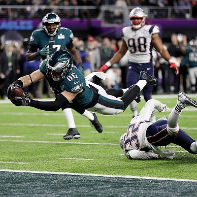
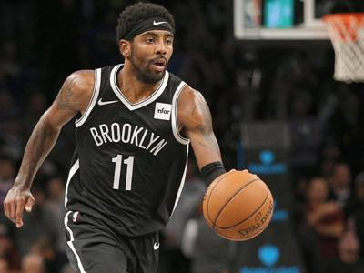

Classificatória: Flamengo bate São Paulo e vai à final da Copa do Brasil
O Flamengo pôs fim à euforia do São Paulo, venceu o segundo jogo da semifinal da Copa do Brasil, por
1 a 0, e agora espera o vencedor de Corinthians e Fluminense, que jogam nesta quinta-feira (15),
para saber quem será seu adversário na decisão....
Ler mais

'Pela primeira vez o Super Bowl será transmitido em streaming de 4K'
Pedro Doria conta que essa transmissão traz um importante adendo pelo fato de o esporte necessitar
da qualidade de vídeo. Ele comenta que, porém, ainda não há uma previsão para que transmissões do
tipo ocorram na Copa do Mundo, por exemplo.
Ler mais

"Brooklyn Nets" afasta Kyrie Irving por se recusar a tomar vacina
A polêmica em torno de Irving se deve à recusa do jogador em revelar se foi vacinado ou não. Isso já
estava impedindo que jogasse as partidas dos Nets em casa, por causa das restrições impostas pela
cidade de Nova York.
Ler mais
Economia
Dólar cai para R$ 5,25 e fecha no menor valor em quase um mês
O dólar comercial encerrou esta quarta-feira (27) vendido a R$ 5,251, com recuo de R$ 0,098 (-1,83%). A
cotação abriu perto da estabilidade, mas passou a cair após a abertura dos mercados norte-americanos e
despencou a partir das 15h, após o Federal Reserve (Fed, Banco Central dos Estados Unidos) anunciar o
aumento dos juros básicos nos Estados Unidos em 0,75 ponto percentual.
Ler mais
Setor de serviços cresce 1,1% em julho
O volume de serviços prestados no Brasil cresceu 1,1% em julho em relação a junho, segundo dados
divulgados nesta terça-feira (13) pelo Instituto Brasileiro de Geografia e Estatística (IBGE). Trata-se
da terceira alta seguida, com ganho acumulado de 2,4%.
Na comparação com julho de 2021, o avanço foi de 6,3% - 17ª taxa positiva consecutiva.
Ler mais
Setor de serviços cresce 1,1% em julho
O volume de serviços prestados no Brasil cresceu 1,1% em julho em relação a junho, segundo dados
divulgados nesta terça-feira (13) pelo Instituto Brasileiro de Geografia e Estatística (IBGE). Trata-se
da terceira alta seguida, com ganho acumulado de 2,4%.
Na comparação com julho de 2021, o avanço foi de 6,3% - 17ª taxa positiva consecutiva.
Ler mais